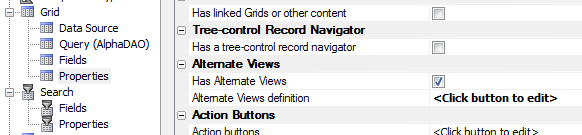
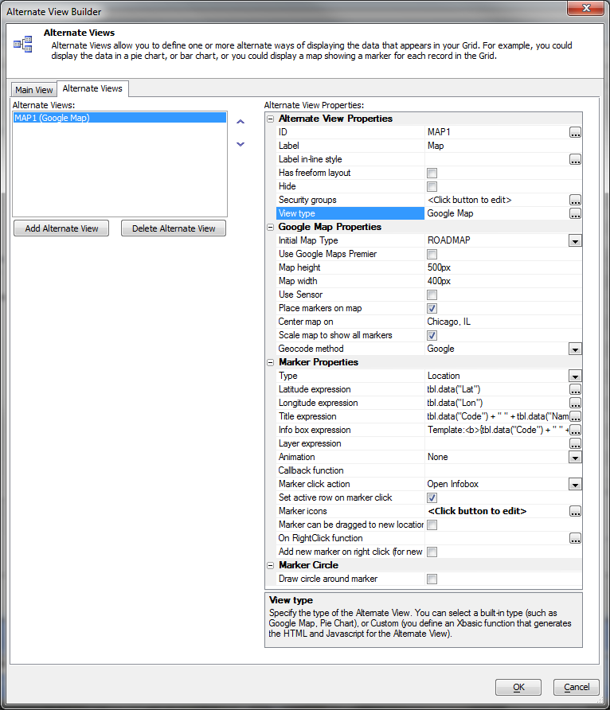
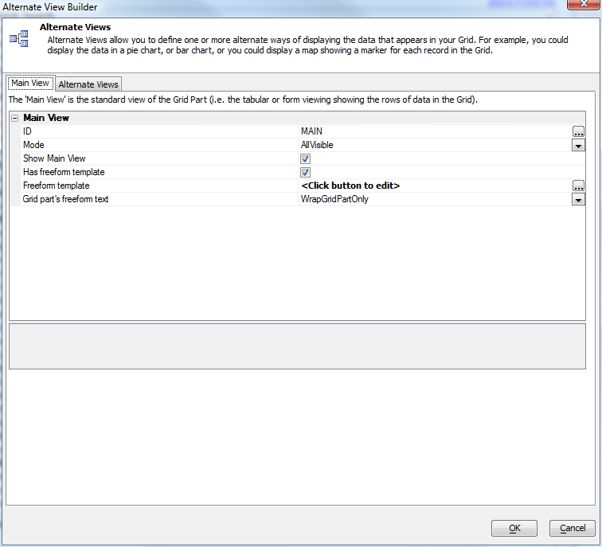
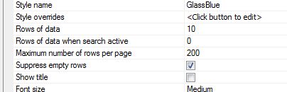
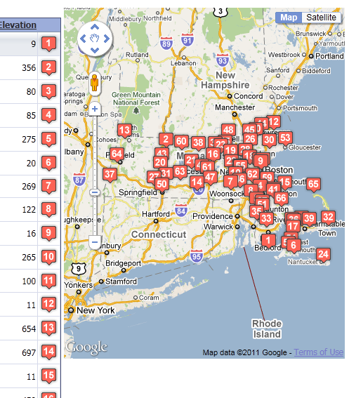

Web Grid Alternate Views
The tabular and columnar views of a grid can convey a lot of information, but the human eye is much more sensitive to shapes and colors than it is to variations text. With an alternate view of a grid, you can display the same information in a way that grabs the user. If it's geographic information, the best display might be a map. If it's scheduling information, the best display might be a calendar.Note that an Alternate view displays the same number of rows as its associated grid. This is in contrast to a Linked component or a component in a Row Expander, both of which display data linked to or contained in the current row.
When using alternate views, it is important to understand that the alternate view and the main view are given the same data. If your grid has a filter, it will also apply to the alternate view. If your grid is displaying 10 records on a page, the alternate view will display the same 10 records.
To enable Alternate Views, check "Has Alternate Views" in the grid properties.

Then choose the alternate view and edit its properties. Here are the properties for a Map alternate view:

In the main view properties, you can choose how the views are organized. The options include tabs and accordions in addition to showing all views.

If you don't want to limit the alternate view to the typical small size of a tabular grid page, you can set the grid's Rows of data when search active to 0, and then set the maximum number of rows per page to a larger but reasonable number. In this case we have chosen 200 points.

With these settings, the map alternate view will only show 10 markers before a search, and will show a maximum of 200 markers after a search. So, for example, after searching for airports in Massachusetts, the alternate map view shows all 67 Massachusetts airports.

See Also
Google Map Component